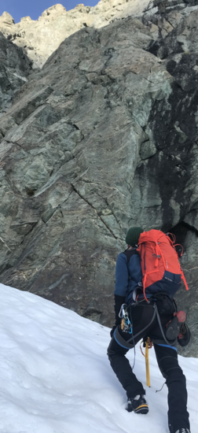
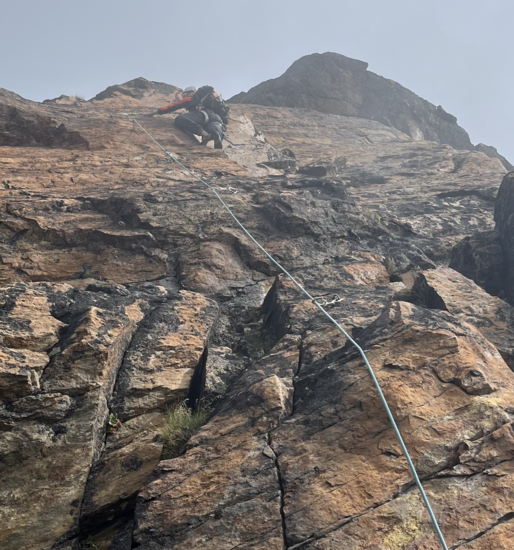
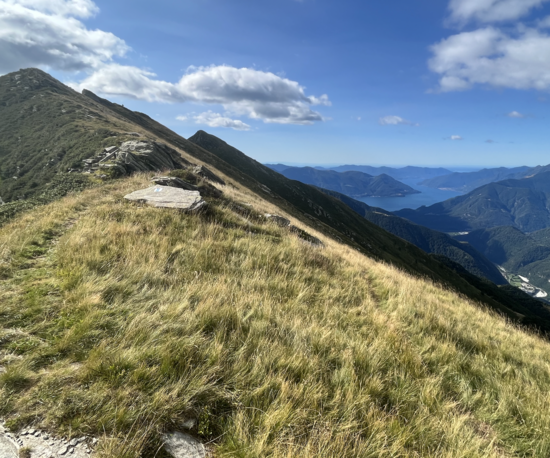
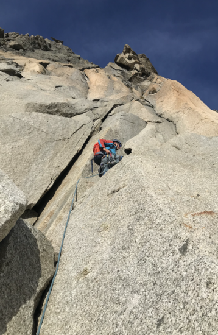
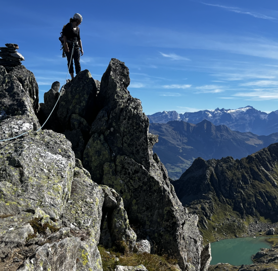
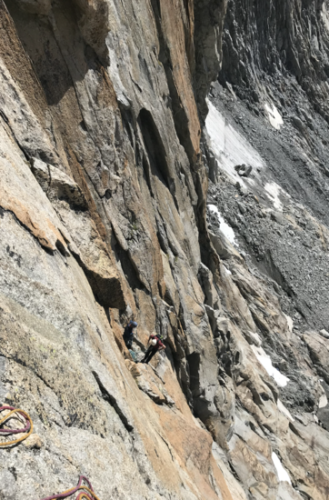
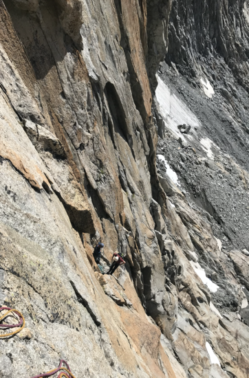
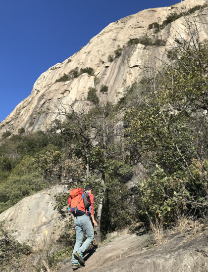
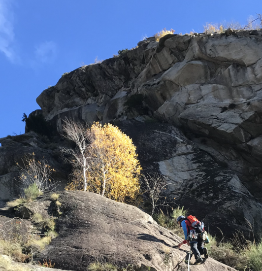
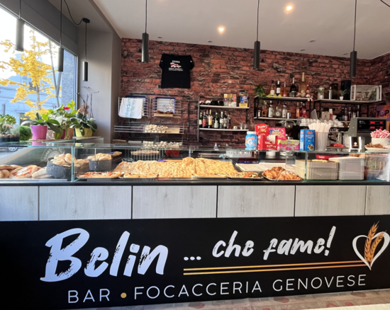

A log of (some of my) outings. Entries before approx. 2023 not reported.
From Bourg St Pierre, little snow in the east couloir, descended west, and closed the loop through the Refuge du Velan.
Through the classical itinerary, and then down the colouir near the summit. Good snow.
From Bourg St Pierre. Amazing, amazing, amazing!

From Buet-Vallorcine.
From north-entrance of GSB tunnel. With Alex! Thanks for the visit!

From Trient. With G. and A.
My first time in Diemtigtal. Going to become a classic...!

Hard snow on top, with couteaux.

From Simplon pass.

Start of holiday week! From Aiguille du Midi, partial descent on Valle Blanche, up to the summit, and then down. Many people on the way back to chx. (dramatic avalanche on Dome du Miage)

With lift to l'index, Col du Belveder, then down the couloir, and to Buet. Very pretty.

Sun is over in chamonix valley. Going south looking for good weather.

Single-pitches in Mottarone. Not too great, not too bad. Good hike.

Can't remember where we went!
Through the classic itinerary from Sustenpass. I broke my binding. Good conditions otherwise.

Amazing Wiwannihorn! Walking up from the valley, night in the shelter, and two climbing routes (Wi vom Fass, Verborgene Tenze). Still snow on the routes and on the descent.

Traversee from Jungfraujoch to Loetschental. That's the end of an excellent ski-touring season! With G.'s skies. Short detour to avoid a thin snow brigde over huge crevasse (while we have seen others passing). Saw someone coming down from the north face of Aletschorn with about 5 turns in total... amazing!

Attempted Bugeleisen; ended up on the wrong route and gave it up at the 3rd pitch.
I cheated on the crux.

Visto per il Peru'. Very nice. Rain on the last pitch. Descend with crampons on the north face. On the way down, recover the material of two Italian which helped two Spanish who wore approach shoes and could not go down. Discovered on the top that I climbed with the laptop in the backpack (deadline of the flagship is approaching..!).

Fable de Venise. Stopped at the first tower.

Climbed Alba Celtica ed Pellegrinaggio in Oriente (3 pitches).

Done two routes. The fox ate the nut cake in the night! Bad!
Climbed Netlo S-O. Cold night in the tent.

From Baltschiederklause to Bietschhorn Hutte through the summit, in 14 hours. Nice climb on the way up; descend never ends. Started at 5:00, summit at 10:30, at the shelter at 19:00. In the glacier, ended up in the water until the knee. Traversee on the snow was good. Climb up efficient. On the way down, found a lot of snow and frozen patches, had to protect a lot in these places.

A few days clmibing on the granite of Val Ferret. Stayed in the busy and moderately dirty winter room of Dalmazzi. My questions ("scusi, ma il Dalmazzi e' aperto?", "il locale invernale del Dalmazzi e' tenuto bene?") to literally everyone in Courmayeur are now legendary. Climbs: La Beresina, Les chamois volants (with its amazing 17 rappels) on Monts Rouges de Triolet, Genepi (Parete dei Titani), and il gatto e la volpe (without headwall).


Frustrating weekend in Grimsel Eldorado :D. Climbed the first few pitches of Motorhead before the sunset on the first day. The second day, gave it up at the first pitch (!) Gletscher Weiss.


Climbed Gaelliwaendli. Pure plaisir. Had to regain motivation after the Eldorado defeat :).

Two-day hike with friends in Canton Ticino. A lot of goats. A lot of cheese.

Hannibalturm on the first day. Climbed Evalin to Furkahorn on the second day, amazing route.


Turistic outing with my parents to see the north face of Eiger, but not everyone has the same taste!
In 3 day, from Naters. Very pretty and in good conditions. Precautionasly, with 2 ice axes for the way down. In the pic, view on Weissmies from the Gredetschental.

Stayed at Gianetti (Met Cedric in the shelter :D) and Allievi. Climbed Punta Torelli (via Mauri-Fiorelli, cold!) Punta Allievi (Spigolo Gervasutti, tres bien passé!), Spigolo Gervasutti. In the valley, stayed at Lo Scoiattolo.

Back from Italy, we climbed Pizzo del Prevat (north-east ridge) da Capanna Leit. Very pretty!

Climbed Mangolito to Winterstock on the first day. On the second, climbed the SW pillier of Dammazwillinge. With Martina and Mathias.
 

Lowenherz. Crux very exposed. No pics!
Paroi de Barberine, mille et un pattes. With Ted and Eoin. Nice friends, less nice climb :D.
Au cour de l'anticyclone. Very pretty route. Effortless 6b of G.!

On the way back from Lorenzo and Maria wedding in Bologna, stop in San Domenico di Varzo for climbing Fifth Avenue. Very pretty! Short rope when rapelling. Bring a double rope next time!

Visited Giovanni and Elisa in Brusson and used the chance to climb the south ridge of Castore (this route). Nice, but a bit sketchy sometimes. Down from the normal way. Slept in the winter room of Rifugio Sella. Down with the jeep from the col di bettaforca.

Mostly Restonica valley. Definetely to be repeated.

Climbed in Paretone di Arnad, Monte Strutto, and Albard di Bard (quattro amici al bar and another easy one, with the second being much nicer).

Climbed Pachamana. Crazy passage in the dihedral. Highlight of the day was the focaccia in the morning! And nice bike tour.
 